☆ Jixian Li 李积贤 ☆
Research associate in the Scalable Computational Intelligence team at the Texas Advanced Computing Center, University of Texas at Austin. I work with scientists to design and build intelligent systems that improve and automate scientific data analysis workflows. My goal is to make scientific discovery simple and efficient.
Before that: postdoc at the Scientific Computing and Imaging (SCI) Institute, University of Utah, with Dr. Chris Johnson, building visualization methods for computational fluid dynamics, medical imaging and biomedical simulations. Ph.D. from the University of Arizona with Dr. Joshua Levine, where my dissertation studied deep learning for exploring collections of visual features of scalar fields.
Interests: visualization, uncertainty analysis, machine learning and computational topology for scientific data. The big goal is to help scientists compute, analyze and communicate what they find.
jixianli@tacc.utexas.edu
CV: cv.pdf
- Visualization
- Uncertainty
- Topology
- Machine Learning
~*~ 2026 ~*~
NEW! Antarctica: Looking through the Ice into the Past
SC26 Art of HPC [video]
NEW! May (A)I Beautify Your Visualization? Expert Judgments of Acceptable Aesthetic Alterations
IEEE VIS [arxiv]
NEW! Topology-Preserving Meshing of Implicit Scalar Fields via Monotonicity Constraints
IEEE VIS [arxiv]
NEW! LoCoMapper: Local Structural Uncertainty Analysis of Mapper Graphs under Cover Perturbations
Uncertainty Visualization Workshop
WebUVisBox: A Scenario-Based Framework for Collaborative and Accessible 3-D Uncertainty Visualization on the Web
IEEE CG&A [doi]
A Single-Cell Atlas and Shiny-Based Framework for Murine Lung Injury and Remodeling
Frontiers in Bioinformatics [doi]
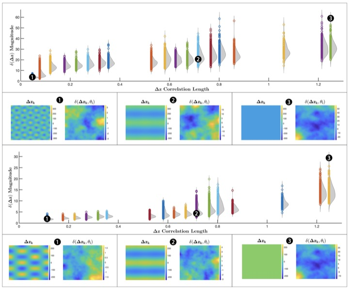
Hyperdifferential Sensitivity Analysis with Respect to Model Discrepancy: Prior Distributions
International Journal for Uncertainty Quantification [doi]
~*~ 2025 ~*~
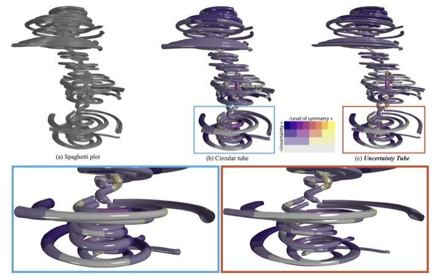
~*~ 2024 ~*~
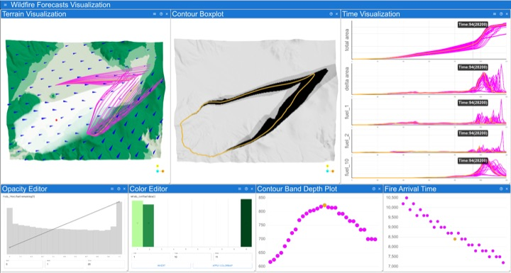
Visualizing Uncertainties in Ensemble Wildfire Forecast Simulations
Uncertainty Visualization Workshop [doi]
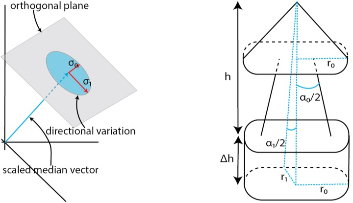
Glyph-Based Uncertainty Visualization and Analysis of Time-Varying Vector Fields
Uncertainty Visualization Workshop [doi]
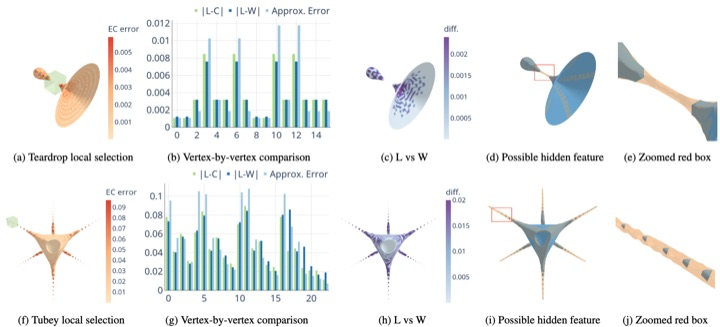
Estimation and Visualization of Isosurface Uncertainty from Linear and High-Order Interpolation Methods
Uncertainty Visualization Workshop [doi]
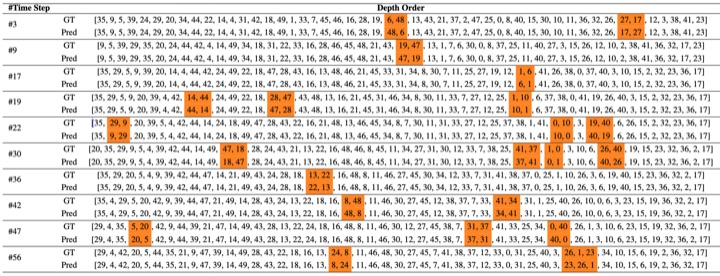
Accelerated Depth Computation for Surface Boxplots with Deep Learning
Uncertainty Visualization Workshop [doi]
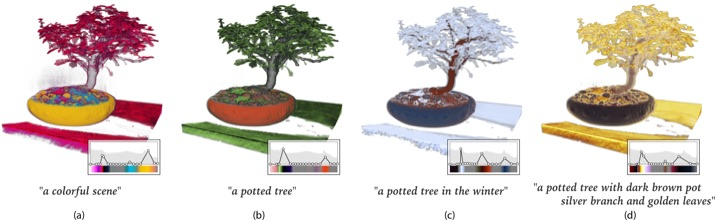
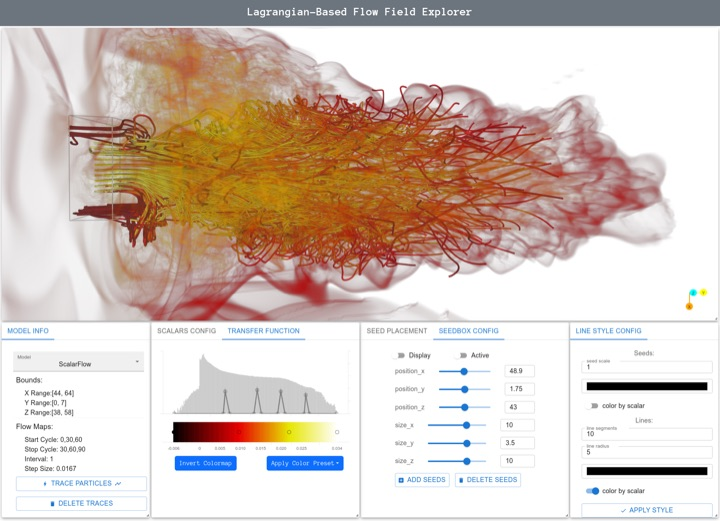
~*~ 2022 ~*~
Deep Learning Approaches for Exploring Collections of Visual Features of Scalar Fields
Ph.D. Dissertation, University of Arizona
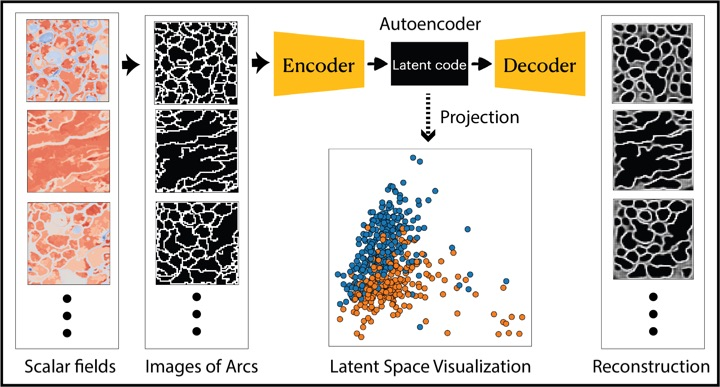
~*~ 2021 ~*~
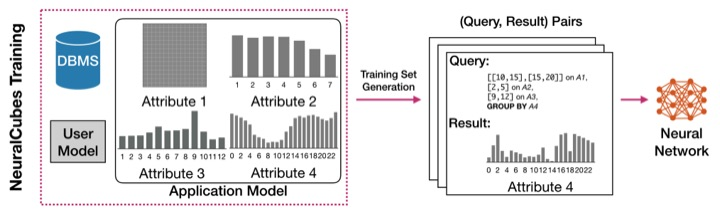
~*~ 2019 ~*~
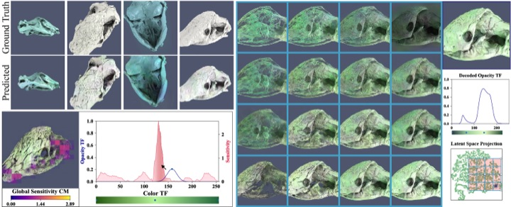
- Q: How many Prolog programmers does it take to change a lightbulb?
- A: Yes.
- A UDP joke, but you may not get it.
- So here is a TCP joke instead: abcdefghijklmnopqRST
Also required reading: xkcd 1739, Fixing Problems.
Duoduo